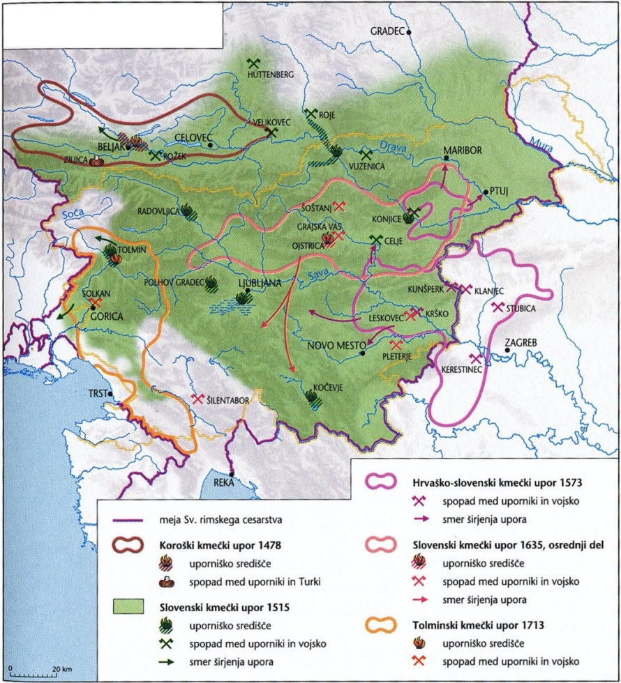
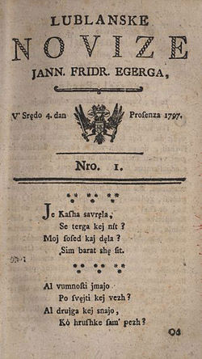

Razvoj zgodovinskih dežel in Slovenci
1
Po propadu Samove plemenske zveze so Alpski Slovani
oblikovali prvo slovansko kneževino, ki je ohranila
samostojnost do okoli leta 743. Pri reševanju si
pomagajte s sliko 2 v barvni prilogi.
2 točki

1.1
Kdo so bili sosedje Alpskih Slovanov, ki so ogrožali
njihovo samostojnost?
Rešitev
Avari / Obri
1.2
Pojasnite, zakaj so Alpski Slovani izgubili zunanjo
samostojnost.
Rešitev (ena od)
- Karantanci so potrebovali bavarsko pomoč proti Avarom.
- Bavarska pomoč je pomenila priznavanje frankovske nadoblasti.
- Karantanci so prišli pod tujo / frankovsko nadoblast.
2
Karantanska družba je bila razslojena. Posebne
ugodnosti so uživali kosezi.
2 točki
Koseška oborožena sila je bila temelj knežje oblasti,
sporno pa je, ali so kosezi pripadali plemstvu ali
knežji »družini«. Kot t. i. politično ljudstvo so kosezi
odločali pri volitvah ali ustoličevanju novega kneza na
Krnskem gradu (vsaj pred začetkom 9. stoletja). Po
uvedbi fevdalizma po začetku 9. stoletja je bil del
kosezov vključen v razvoj plemstva, večinoma pa so kot
poseben sloj ostali tesno povezani z vojvodo oz. mejnim
grofom.
Vir: Ilustrirana zgodovina Slovencev, str. 58.
Mladinska knjiga. Ljubljana, 1999
2.1
Navedite dva privilegija, ki so ju uživali kosezi v
karantanski družbi.
Rešitev (dve od)
- Kosezi so sodelovali pri izbiranju kneza.
- Kosezi so sodelovali pri ustoličevanju kneza.
- Kosezi so imeli svojo pravo in sodstvo.
- Kosezi so odločali pri volitvah.
2.2
Katero znamenje oblasti je bilo povezano z
ustoličevanjem karantanskih knezov?
Rešitev
Knežji kamen
3
S slovansko naselitvijo vzhodnoalpskega prostora se je
pričelo obdobje kolonizacije, ki je vrh dosegla med 10.
in 12. stoletjem. Pojasnite, s kakšnim namenom se je
izvajala kolonizacija na slovenskih tleh.
1 točka
Rešitev (ena od)
- Z nastankom zemljiških gospostev se je izvajal proces kolonizacije.
- Kolonizacija se je izvajala zaradi pridobivanja novih obdelovalnih površin.
- S kolonizacijo so želeli povečati dohodke zemljiških gospodov.
4
Poleg Karantanije je bila za Franke strateško pomembna
tudi Spodnja Panonija. Povežite imena posameznikov, ki
so bili dejavni na ozemlju Spodnje Panonije, z njihovo
vlogo tako, da na črto v levem stolpcu vpišete ustrezno
črko iz desnega stolpca.
2 točki
| Vloga | Odgovor |
|---|---|
| spodnjepanonski (samostojni) knez | B – Kocelj |
| velikomoravski knez | D – Rastislav |
| škof sirmijske škofije | C – Ciril |
| frankovski mejni grof | A – Pribina |
Za 4 pravilne 2 t. · za 3–2 → 1 t.
5
Na slovenskem ozemlju so se postopoma oblikovale dežele
in s tem deželna zavest.
4 točke
Ko je deželni zbor razpisan in so komisarji s
pooblastilom ter instrukcijo na poti, preverimo
odzivnost deželnih stanov. Knez je v razpisu deželnega
zbora izrazil pričakovanje, da se bodo povabljeni
srečanja z njim oziroma komisarji zanesljivo udeležili.
Neposlušnim je obljubil kazen. Prihod na zbor ni bil
samo pravica deželanov, ampak – poudarili smo že večkrat
– bila je njihova dolžnost. Z dedno prisego so
obljubili, »da bodo posploševali koristi deželnega kneza
in odvračali škodo, da bodo zvesti in poslušni.
Vir: Nared, A., 2009: Dežela – knez – stanovi, str.
221. Zgodovinski inštitut Milka Kosa ZRC SAZU in
Arhiv Republike Slovenije. Ljubljana
Obkrožite črko pred izbrano slovensko deželo: A – KOROŠKA ali B – ŠTAJERSKA. Spodaj so prikazani možni odgovori za oba primera.
| Vprašanje | A – KOROŠKA | B – ŠTAJERSKA |
|---|---|---|
| 5.1 – Najpomembnejša plemiška rodbina | Eppensteinci / Spanheimi | Traungavci / Otokarji |
| 5.2 – Sedež deželnega kneza | Celovec | Gradec / Graz |
| 5.3 – Tekmec Habsburžanov v 13. stol. | Otokar (II.) Přemysl / češki kralj Otokar II. | Otokar (II.) Přemysl / češki kralj Otokar II. |
| 5.4 – Kako je vladal deželni knez (dve od) |
|
|
6
Med plemiškimi rodbinami so pomembno vlogo imeli
Celjski grofje. Obkrožite črke pred tremi pravilnimi
trditvami.
3 točke
A – Vzpon Celjskih grofov je povezan z bitko proti
Turkom na Kosovskem polju.
B – Sigismund Luksemburški je za ženo vzel Ulrikovo
hčer, Barbaro Celjsko.
C – Herman II. je svoje otroke poročal v pomembne
plemiške rodbine.
D – Friderik II. se je po smrti žene poročil s
plemkinjo nižjega rodu, Veroniko Deseniško.
E – Spor med Celjskimi grofi in Habsburžani se je
končal šele z izumrtjem Celjskih grofov.
F – Zaradi boja za skrbništvo nad Leopoldom so
ogrski plemiči izvedli atentat na Ulrika II.
Pravilne trditve: C, D, E
7
Pred turško nevarnostjo so se prebivalci slovenskih
dežel različno zavarovali.
2 točki
A kadar je prišla velika nevarnost za graščaka in
njegovo družino, tedaj se je zaklenil v svoj dobro
utrjeni grad, kmeta pa je pustil brez pomoči zunaj – v
njegovi borni koči. In če je došel potem sovražnik,
moral je ubogi kmet zapustiti dvor in dom; pobegnil je
visoko gor v planine in pečine, da si reši življenje.
Sovražnik mu je pa požgal brez ovire in usmiljenja hišo,
skedenj, vzel mu je vse, kar je našel, in odpeljal s
seboj, česar ni mogel kar na mestu uničiti.
Vir: Sket, J., 1997: Miklova Zala: povest iz
turških časov, str. 8. DZS. Ljubljana
7.1
Kako so se kmetje v času turških napadov izognili
nevarnosti?
Rešitev (dve od)
- Kmetje so začeli zidati tabore.
- Kmetje so se skrivali v jamah.
- Kmetje so se skrivali v gozdovih.
- Kmetje so našli zatočišče v planinah / pečinah.
- Kmetje so se z izpostavljenih območij preselili v notranjost.
7.2
Pojasnite, kako je plemstvo izkoristilo kmete za
obrambo pred Turki.
Rešitev (ena od)
- Kmetje so bili vključeni v pomožno vojsko / črno vojsko.
- Kmetje so morali utrditi gradove (za zaščito njihovega premoženja).
8
Na konec turške nevarnosti je najbolj vplival nastanek
Vojne krajine. Pomagajte si s sliko 3 v barvni
prilogi.
2 točki

8.1
Kaj je bila Vojna krajina?
Rešitev (ena od)
- Vojna krajina je bila sistem trdnjav na območju Slavonije, Hrvaške in Dalmacije.
- Vojna krajina je bila obrambni pas vzdolž turške meje.
- Vojna krajina je bila obmejni pas trdnjav od Drave do Jadranskega morja.
8.2
Navedite notranjeavstrijske dežele, ki so
financirale Vojno krajino.
Rešitev (vse tri)
Kranjska, Koroška, Štajerska
9
Zaostreni odnosi med kmeti in zemljiškimi gospodi so
pripeljali do kmečkih uporov. Na Slovenskem so se kmečki
upori pojavili v vseh deželah. Pri reševanju si
pomagajte s sliko 4 v barvni prilogi.
3 točke

9.1
Katerega leta je potekal največji kmečki upor na
Slovenskem?
Rešitev
1515
9.2
Navedite dežele, ki jih je zajel ta upor.
Rešitev (tri od)
- Štajerska
- Koroška
- Kranjska
- Goriška
9.3
Pojasnite, zakaj so bili kmetje v boju proti
zemljiškemu gospodu večinoma neuspešni.
Rešitev (dve od)
- Kmetje so bili slabo organizirani.
- Kmetje niso imeli osrednjega vodstva.
- Kmetje so bili preslabo oboroženi.
- Kmetje so imeli premalo vojaških izkušenj.
- Kmetje so bili neenotni.
- Kmetje niso imeli jasnih ciljev.
- Kmetje so naivno zaupali cesarju.
10
Sredi 16. stoletja se je na slovenskem ozemlju širil
protestantizem. Temu so sledili deželnoknežji ukrepi
proti protestantizmu v notranjeavstrijskih
deželah.
3 točke
Ko je Rinaldo Scarlichi napovedal vizitacijo celotne
ljubljanske škofije, je v pastirskem pismu razložil njen
pomen z besedami: Vizitacija naj prinese obilne
pastoralne sadove, obnovi duhovniško disciplino ter
pripomore k pospeševanju bogoslužja in poboljšanju
življenja vernikov, med katerimi naj odpravi ostanke
luteranstva, čarovništva in praznoverja. [1631]
Vir: Lavrič, A., 2007: Ljubljanska škofija v
vizitacijah 17. stoletja, str. 14. Založba ZRC, ZRC
SAZU. Ljubljana
10.1
Naštejte deželnoknežje ukrepe proti protestantom v
notranjeavstrijskih deželah.
Rešitev (dve od)
- izgon protestantov
- prepoved delovanja Mandelčeve tiskarne / prepoved protestantskega tiska
- odstavitev protestantskih mestnih sodnikov
- odstavitev protestantskih predikantov
- ustanovitev jezuitskih kolegijev
- ukinitev protestantskih šol
- prepoved protestantskega bogoslužja
- organizacija verskih komisij
- sežig protestantskih knjig
10.2
S kakšnim namenom so škofje opravljali vizitacijo?
Rešitev (ena od)
- Škofje so preverjali versko stanje vernikov.
- Škofje so preverjali delovanje duhovnikov.
- Škofje so preverjali življenje v samostanih / župnijah.
- Z vizitacijami bi odpravili luteranstvo / čarovništvo / praznoverje.
- Z vizitacijami so si prizadevali za razmah verskega življenja.
- Skrbeli so za disciplino nižje duhovščine.
10.3
Pojasnite, zakaj se je protestantizem ohranil le v
Prekmurju.
Rešitev (ena od)
- Prekmurje je bilo del Ogrske, kjer niso izvajali protireformacije.
- Habsburžani so bili popustljivejši do ogrskega plemstva zaradi pritiska osmanske države na ogrsko mejo / protiturške obrambe.
11
Z Marijo Terezijo je slovensko ozemlje dosegel tudi
razsvetljeni absolutizem. Obkrožite črke pred tremi
pravilnimi trditvami.
3 točke
A – Z vojaško reformo je stalno najemniško vojsko
zamenjala stalna in redna vojska.
B – V materni jezik so začeli prevajati učbenike in
posamezne vladne odloke.
C – Uvajali so hlevsko živinorejo in zasadili nove
kulturne rastline – pšenico in koruzo.
D – Novonastale kmetijske družbe so pospeševale
čebelarstvo.
E – Za šolskega nadzornika na Kranjskem je bil
imenovan France Prešeren.
F – Marija Terezija je leta 1784 uvedla splošno
šolsko obveznost za dečke.
Pravilne trditve: A, B, D
Slovensko nacionalno preoblikovanje
12
V času Marije Terezije se je pojavila potreba po
slovenskem pravopisu.
2 točki
Klic avtorja nemško pisane in leta 1768 v Ljubljani
izdane /…/ avguštinskega meniha Marka Pohlina, ki je
odločno zavračal tujce in izobražene sonarodnjake, ker
da zaničujejo kranjski jezik, in slovensko govoreče
sodeželane pozival, naj se ga ne sramujejo, je bil zato
dvakratno prevratniško dejanje: na eni strani je
spodbujal k večji samozavesti pri uporabi slovenščine,
na drugi pa v jeziku odkrival vez, ki je slovensko
govoreče Kranjce družila v posebno, od nemško govorečih
kranjskih prebivalcev različno jezikovno enoto.
Vir: Štih, P., in drugi, 2008: Slovenska zgodovina:
družba – politika – kultura, str. 246. Inštitut za
novejšo zgodovino. Ljubljana
12.1
Navedite naslov prve znanstvene slovenske slovnice.
Rešitev
Kranjska gramatika / Krajnska gramatika /
Kraynska gramatika
12.2
Pojasnite, zakaj lahko štejemo izid tega dela za
začetek slovenskega narodnega preporoda.
Rešitev (ena od)
- Pojavila se je možnost prebiranja strokovne literature v slovenskem jeziku.
- Uveljavljati se je začela zavest, da je slovenski jezik enoten.
- Jezik je postal pomemben povezovalni element.
- Izid slovnice je navdihnil tudi druge izobražence k pisanju slovnic / slovarjev / učbenikov.
13
Zavest o enotnosti slovenskega naroda je prišla v
ospredje v Zoisovem krožku. Program članov tega krožka
je obsegal pripravo slovnice, slovarja slovenskega
jezika in slovenske znanstvene zgodovine. Navedite ime
in priimek avtorja zgodovinskega dela Poskus zgodovine
Kranjske in ostalih dežel južnih Slovanov
Avstrije.
1 točka
Rešitev
Anton Tomaž Linhart
14
Ob prihodu Francozov na slovenska tla so imeli
prebivalci Ilirskih provinc do njih različna
pričakovanja.
2 točki

14.1
Kako se je izboljšal položaj slovenskega jezika v
času Ilirskih provinc?
(Slika 1: Lublanske novize — Vir:
https://sl.wikipedia.org/wiki/Lublanske_novice.
Pridobljeno: 29. 12. 2020.)
Rešitev (ena od)
- Slovenci smo dobili učbenike, napisane v slovenščini.
- Slovenci smo dobili (prvi) časopis v slovenskem jeziku.
- Slovenski jezik se je uporabljal pri uradovanju na občinah.
- Slovenski jezik je bil učni jezik na nekaterih šolah / v nižjih gimnazijah.
14.2
Pojasnite, zakaj so imele nekatere družbene skupine
negativen odnos do Ilirskih provinc.
Rešitev (dve od)
- Plemstvo je izgubilo sodno oblast na svojem zemljiškem gospostvu.
- Plemstvo je izgubilo nekatere privilegije (upravne in sodne funkcije).
- Trgovce so ovirale nove meje in carine.
- Duhovščina je bila nezadovoljna zaradi uvedbe civilne poroke.
- Duhovščina ni bila zadovoljna zaradi verske enakopravnosti.
- Kmetje so pričakovali odpravo fevdalizma / ukinitev fevdalnih obveznosti, a so Francozi samo zmanjšali dajatve.
- Kmetje so bili dvojno obremenjeni.
15
Prvi je zamisel o enotnem črkopisu za vse južne Slovane
izrazil Jernej Kopitar, vendar se vsi niso strinjali z
njegovo idejo in sledila je abecedna vojna.
2 točki
Zdaj pa o neki Dajnkovi ukani. Obiskal je vse župnike
mariborskega okrožja ter si od vsakega dal napisati
potrdilo, da si vsi močno žele uvedbo njegovih črk.
Vir: Slovenska kronika XIX. stoletja. 1800–1860,
str. 160. Nova revija. Ljubljana, 2001
15.1
Kako se imenujeta črkopisa, ki sta vsebovala tudi
črke iz cirilice?
Rešitev
dajnčica, metelčica
15.2
Pojasnite, zakaj sta bila oba črkopisa kmalu
prepovedana.
Rešitev (ena od)
- Črkopisa sta vsebovala črke iz cirilice.
- Črkopisa sta povečala zmedo na jezikovnem področju.
- Črkopisa sta naletela na odpor intelektualcev.
16
Prelom v narodnem gibanju je pomenil začetek izhajanja
Kmetijskih in rokodelskih novic.
2 točki
16.1
Kdo je bil urednik Kmetijskih in rokodelskih novic?
Rešitev
Janez Bleiweis
16.2
Pojasnite, zakaj je bilo pomembno izhajanje
Kmetijskih in rokodelskih novic.
Rešitev (dve od)
- Kmetijske in rokodelske novice so bile edini časopis v slovenskem jeziku.
- Z njimi so širili uporabo slovenskega jezika.
- Z njimi so širili uporabo nove pisave / gajice.
- Z njimi so pomagali krepiti narodno zavest.
- Kmetijske in rokodelske novice so utrjevale slovensko identiteto.
- Z njimi so krepili tezo o avtohtonosti Slovencev.
- V njih so pogosto uporabljali oznako Slovenec / slovenski jezik.
17
Leta 1848 je revolucionarno vrenje zajelo tudi
slovensko ozemlje. V mestih so poročali o nemirih,
medtem ko je še bolj vrelo na podeželju.
2 točki
Tudi na Ižanskem je postalo praznično tiste dni.
Odložili so sekire in motike, drevo je ostalo v brazdi,
vile na gnoju, ljudje so pa praznovali. In ker ni bilo
zapovedanega praznika, da bi hodili poslušat božjo
besedo v cerkev, tedaj so odšli praznovat v gostilno.
Tam se je tudi razlegala beseda, ki sicer ni bila božja,
je pa bila nenavadna, zanimiva in všečna.
Vir: Jaklič, F., 1926: Peklena svoboda: Povest o
ljubljanski in ižanski revoluciji 1848, Slovenske
večernice, 79. zvezek, str. 62. Družba sv. Mohorja.
Prevalje
17.1
Opišite, kako so se kmetje odzvali na začetek
revolucije.
Rešitev (dve od)
- Kmetje so začeli sekati gozdove.
- Kmetje so začeli napadati gradove.
- Kmetje so požigali urbarje.
- Kmetje so se uprli zemljiškemu gospodu.
- Kmetje so prenehali plačevati dajatve.
- Kmetje so prenehali opravljati tlako.
- Kmetje so odšli praznovat v gostilno.
17.2
Pojasnite, kdaj dokončno so se kmetje povsem
umirili.
Rešitev (ena od)
- Kmetje so se pomirili šele po razglasitvi zemljiške odveze.
- Kmetje so se umirili šele z odpravo fevdalizma.
18
Z zahtevami po Zedinjeni Sloveniji je slovensko
nacionalno gibanje iz kulturnega preraslo v
politično.
3 točke
1. Da se politično razkropljeni narod Slovencev na
Kranjskem, Štajerskim, Primorskim in Koroškim kakor
jeden narod v eno kraljestvo z imenom »Slovenija«
zedini, in da ima za-se svoj deželni zbor.
2. Da ima slovenski jezik v Sloveniji popolnoma tiste pravice, ktere ima nemški jezik v nemških deželah, da bode tedaj naši volji pripušeno, kdaj in kako hočemo slovenski jezik v šole in pisarnice upeljati.
3. Da bode naša Slovenija obstojni del Austrijanskega ne nemškega cesarstva. Mi nočemo, da bi bila naša dežela pri nemškem zboru namestovana, le tiste postave nas bodo vezale, ktere nam bode Cesar z našimi poročniki dal. Vir: Melik, V., Gestrin., F., 1976: Zgodovinska čitanka za sedmi razred osnovne šole, str. 31, 32. DZS. Ljubljana
2. Da ima slovenski jezik v Sloveniji popolnoma tiste pravice, ktere ima nemški jezik v nemških deželah, da bode tedaj naši volji pripušeno, kdaj in kako hočemo slovenski jezik v šole in pisarnice upeljati.
3. Da bode naša Slovenija obstojni del Austrijanskega ne nemškega cesarstva. Mi nočemo, da bi bila naša dežela pri nemškem zboru namestovana, le tiste postave nas bodo vezale, ktere nam bode Cesar z našimi poročniki dal. Vir: Melik, V., Gestrin., F., 1976: Zgodovinska čitanka za sedmi razred osnovne šole, str. 31, 32. DZS. Ljubljana
18.1
Kakšno (pre)ureditev države je program predvideval
za Avstrijsko cesarstvo?
Rešitev (ena od)
- federativno ureditev Avstrijskega cesarstva
- federalizacijo monarhije
18.2
Kje je program doživel najmočnejšo mednarodno
podporo?
Rešitev
(na (vse)slovanskem kongresu) v Pragi
18.3
Navedite vsebinsko različne zahteve programa
Zedinjena Slovenija.
Rešitev (tri od)
- Program je predvideval združitev vsega narodnostnega ozemlja v eno enoto.
- Program je predvideval odpravo starih deželnih enot.
- Program je predvideval nove meje, začrtane po narodnostnem ozemlju.
- Program je predvideval lasten parlament / deželni zbor.
- Program je predvideval, da naj slovenski jezik postane uradni jezik / učni jezik v šolah.
- Program je predvideval federalizacijo monarhije na podlagi nacionalnega načela.
- Program je predvideval preureditev Avstrijskega cesarstva.
- Program je predvideval ustanovitev univerze.
19
Po porazu revolucije se je postopoma uvedel Bachov
absolutizem ali neoabsolutizem. Pojasnite, na katerem
področju je lahko znova vendarle delovalo narodno
gibanje.
1 točka
Odlomek iz pisma Matije Majerja Jožefu Muršcu, 1851:
»S politiko sedaj ni nič začeti – samo opazovati moramo, kaj se godi – in skrbno se literarnega dela poprijeti. To je sedaj naša politika.« Vir: Slovenska kronika XIX. stoletja. 1800–1860, str. 404. Nova revija. Ljubljana, 2001
»S politiko sedaj ni nič začeti – samo opazovati moramo, kaj se godi – in skrbno se literarnega dela poprijeti. To je sedaj naša politika.« Vir: Slovenska kronika XIX. stoletja. 1800–1860, str. 404. Nova revija. Ljubljana, 2001
Rešitev
Narodno gibanje je lahko delovalo le na
kulturnem / literarnem področju.
20
V času ustavne dobe se je obnovilo politično življenje.
Narodna zavest se širila predvsem na velikih ljudskih
zborovanjih na prostem.
3 točke
Slovenski gospodar je v Mariboru 20. avgusta 1868
poročal:
G. Rajiž: »Bratje Slovenci! Dogovorili ste se in sklenili, da hočete v uradnije svoj slovenski jezik in samo slovenski. Tirjajmo svoj jezik tudi v naše šole in sicer v domače ljudske šole in v više, ki se jim pravi realke in gimnazije. — Da se človek uči misliti in razumeti to, kar ga obdaja, da si zna za svoje potrebe vse sam zapisovati, da zna dobro knjigo prebirati, da časopise, to kar se po svetu dela in godi, razume, za to so ljudske šole./…/ Ves namen naših učilnic je bil ta, da bi nas bili v Nemce spremenili. Tega pa nečemo ! (Gromoviti klici: Nečemo!)« Vir: Slovenski gospodar, 20. 8. 1868, letnik 2, številka 34. Tiskarna sv. Cirila. Maribor, 1868
G. Rajiž: »Bratje Slovenci! Dogovorili ste se in sklenili, da hočete v uradnije svoj slovenski jezik in samo slovenski. Tirjajmo svoj jezik tudi v naše šole in sicer v domače ljudske šole in v više, ki se jim pravi realke in gimnazije. — Da se človek uči misliti in razumeti to, kar ga obdaja, da si zna za svoje potrebe vse sam zapisovati, da zna dobro knjigo prebirati, da časopise, to kar se po svetu dela in godi, razume, za to so ljudske šole./…/ Ves namen naših učilnic je bil ta, da bi nas bili v Nemce spremenili. Tega pa nečemo ! (Gromoviti klici: Nečemo!)« Vir: Slovenski gospodar, 20. 8. 1868, letnik 2, številka 34. Tiskarna sv. Cirila. Maribor, 1868
20.1
Kje so pripravili prvo večje ljudsko zborovanje na
prostem?
Rešitev
Ljutomer
20.2
Zakaj je bilo največ taborov organiziranih na
obrobju slovenskega etničnega ozemlja?
Rešitev (ena od)
- zaradi narodne ogroženosti
- zaradi germanizacije
- zaradi iredentizma
- zaradi premika severne etnične meje proti jugu
20.3
Pojasnite, zakaj je bila uvedba slovenskega jezika v
šolah in uradih tako pomembna za Slovence, da so to
zahtevo množično izražali na taborih.
Rešitev (ena od)
- S tem bi slovenski jezik postal enakovreden nemškemu.
- S tem se je krepila narodna zavest.
- S tem bi bili Slovenci bolj izobraženi.
- Slovenci bi bolje razumeli vladne odloke / ukrepe.
21
Za ukinitev taborov so bila med drugimi kriva tudi
nesoglasja med mladoslovenci in staroslovenci. Povežite
politične poglede s politično skupino, ki jih je
zagovarjala, tako da na črto v levem stolpcu vpišete
ustrezno črko iz desnega stolpca.
2 točki
| Politični pogled / oznaka | Skupina (A – mladoslovenci, B – staroslovenci) |
|---|---|
| »Vse za vero, dom, cesarja!« | B – staroslovenci |
| »Vse za domovino, omiko in svobodo!« | A – mladoslovenci |
| liberalci | A – mladoslovenci |
| konzervativci | B – staroslovenci |
Za 4 pravilne 2 t. · za 3–2 → 1 t.
22
Po skoraj petnajstletnem obdobju slogaštva so se
politična nasprotja poglobila in povzročila nastanek
prvih slovenskih političnih strank.
5 točk
Ivan Šušteršič v trialističnem memorandumu Francu
Ferdinandu: »Naš državno pravni program je trializem.
Zavzemamo se zanj ne le iz narodnih, temveč tudi
dinastičnih vzrokov; kajti pretežna masa slovenskega
ljudstva je cesarju zvesta in stremi za veliko, mogočno
monarhijo pod žezlom habsburške dinastije. Združitev
jugoslovanskih pokrajin v tretje državnopravno telo v
okviru monarhije je dinastična potreba /…/«
Vir: Brodnik, V., in drugi, 2020: Zgodovina 3, str.
178. Mladinska knjiga. Ljubljana
»1. [A]vstroogrski Jugoslovani štejejo za končni cilj
svojega narodnopolitičnega stremljenja popolno narodno
združitev vseh Jugoslovanov ne glede na različnost imen,
vere, pisave in dialektov ali jezikov; 2. kot deli
velikega enotnega naroda stremijo, da se konstituirajo
kot enoten narod, ne glede na vse umetno napravljene
državno-pravne in politične pregraje, želeč skupno
nacionalnoavtonomno kulturno življenje kot svobodna
enota v popolnoma demokratični konfederaciji narodov; 3.
[…]«
Vir: Brodnik, V., in drugi, 2020: Zgodovina 3, str.
179. Mladinska knjiga. Ljubljana
Obkrožite črko pred izbrano politično stranko: A – KATOLIŠKA NARODNA STRANKA ali B – JUGOSLOVANSKA SOCIALDEMOKRATSKA STRANKA. Spodaj so prikazani možni odgovori za oba primera.
| Element eseja | A – KATOLIŠKA NARODNA STRANKA | B – JUGOSLOVANSKA SOCIALDEMOKRATSKA STRANKA |
|---|---|---|
| Leto ustanovitve | 1892 | 1896 |
| Politično-idejna usmeritev (ena od) | konzervativizem / konservativna ideologija / katoliška / klerikalna | socializem / socialistično usmerjena politična ideologija |
| Volivci (ena od) | kmetje / katoliško usmerjeni meščani / izobraženci / delavci / drobnoobrtniški sloj | delavci |
| Značilnosti programa (ena od) |
|
|
| Odnos do nacionalnega / jugoslovanskega vprašanja (ena od) |
|
|
23
Po letu 1867 se je začela gospodarska rast, ki se je
med drugimi kazala v hitrem nastajanju novih delniških
družb in bank. Pri reševanju si pomagajte s sliko 5 v
barvni prilogi.
3 točke

23.1
Navedite imeni delniških družb, ki sta bili
ustanovljeni na slovenskem ozemlju po letu 1867.
Rešitev (obe)
Kranjska industrijska družba, Trboveljska
premogokopna družba
23.2
Navedite industrijske dejavnosti, ki so bile v
tistem času najbolj razvite na Slovenskem.
Rešitev (dve od)
- železarstvo
- premogovništvo
- rudarstvo
- predelava svinca in cinka
- steklarstvo
- tekstilna industrija
- lesnopredelovalna industrija
- usnjarstvo
23.3
Pojasnite, kateri dejavniki so vplivali na
gospodarsko rast.
Rešitev (dve od)
- dualistična preobrazba monarhije
- stabilizacija notranjepolitičnih razmer
- povečano število delnic v obtoku
- gradnja železnice / južna železnica
- carinska politika
- industrializacija
24
Proti koncu 19. stoletja se je stopnjevala agrarna
kriza in s tem izseljevanje.
2 točki
24.1
Navedite vzroke za agrarno krizo.
Rešitev (dve od)
- zadolženost kmetij
- visoki davki
- odškodnina / izvajanje zakona o zemljiški odvezi
- prepočasna posodobitev kmetijstva
- znižanje cen kmetijskih pridelkov (zaradi tuje konkurence)
- propadanje kmečke obrti / prevozništva
24.2
Opišite, kdo so bile aleksandrinke.
Rešitev
Aleksandrinke so bile ženske iz Vipavske doline
/ s Krasa / z Goriškega, ki so se izselile v
Egipt, kjer so delale kot služkinje / dojilje.
25
Pred naštete dogodke dodajte letnice: 1461, 1584, 1848,
1853, 1859, 1868.
3 točke
Rešitev
| 1859 | prenos sedeža lavantinske škofije iz Št. Andraža v Maribor |
| 1853 | Kozlerjev zemljevid slovenskih dežel in pokrajin |
| 1868 | prvi tabor na Slovenskem |
| 1584 | Dalmatinova Biblija |
| 1848 | vseslovanski kongres v Pragi |
| 1461 | ustanovitev ljubljanske nadškofije |
Za 6 pravilnih 3 t. · za 5–4 → 2 t. · za 3–2 → 1 t.